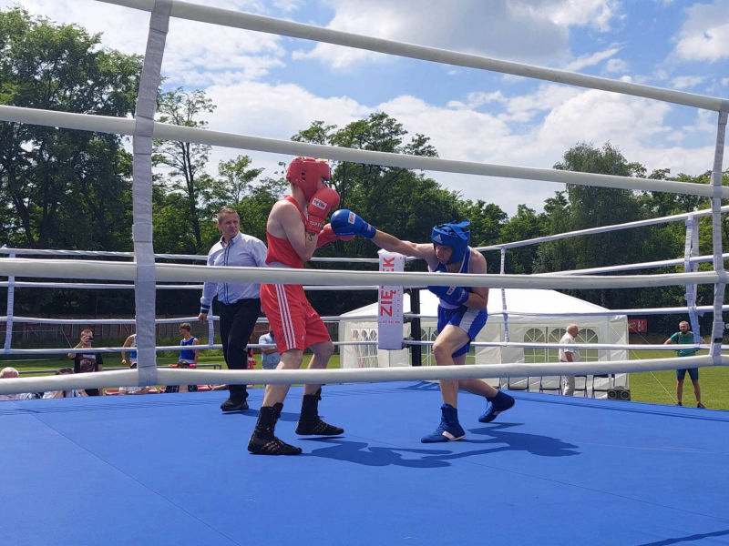
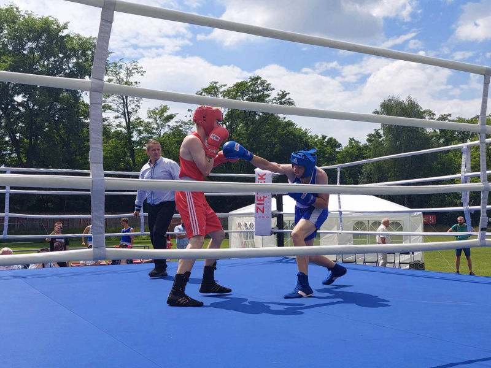
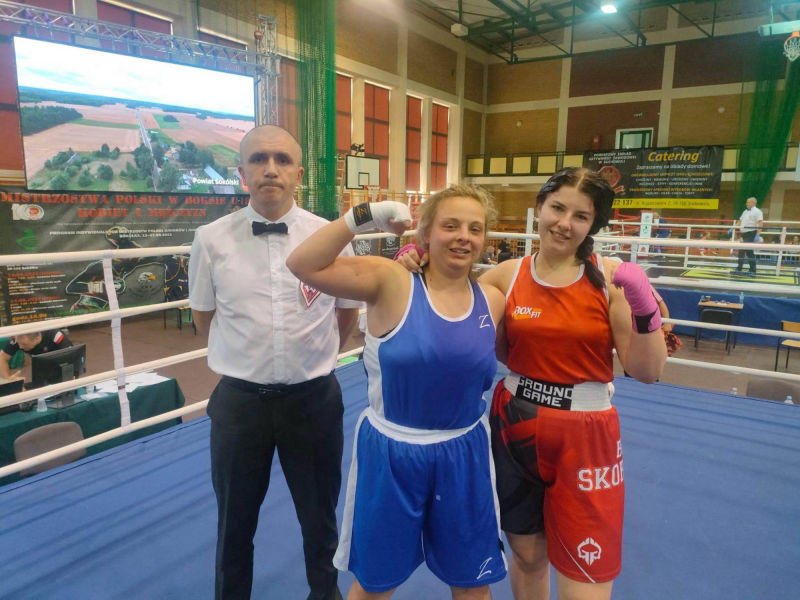
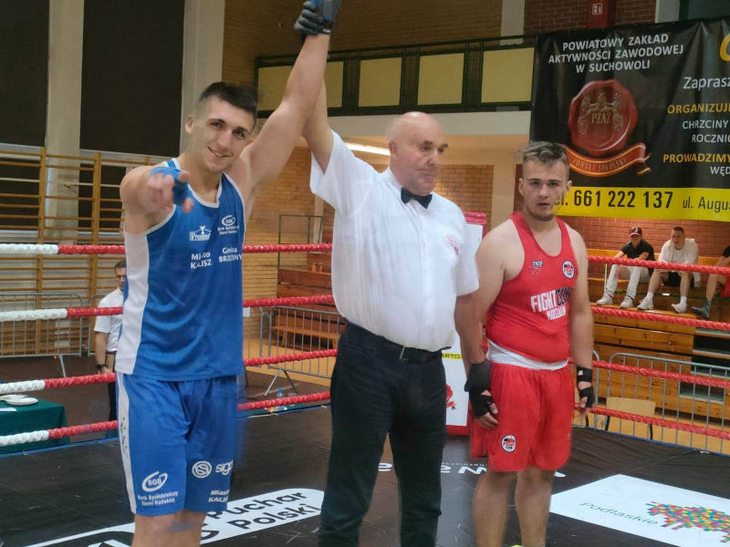
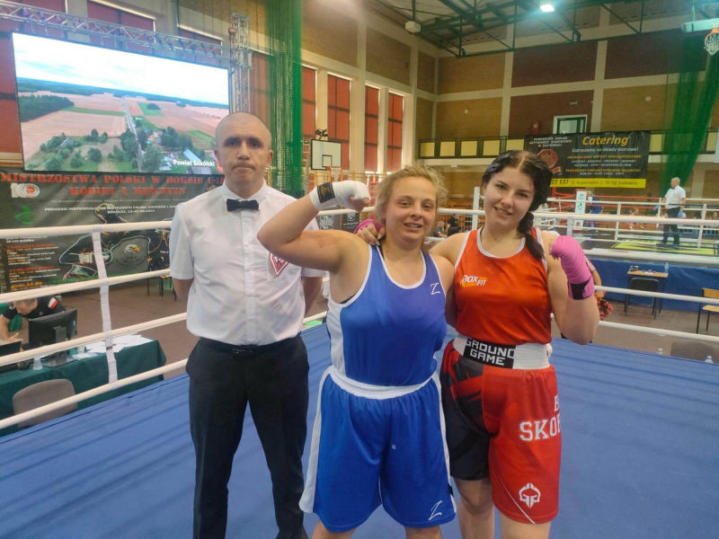
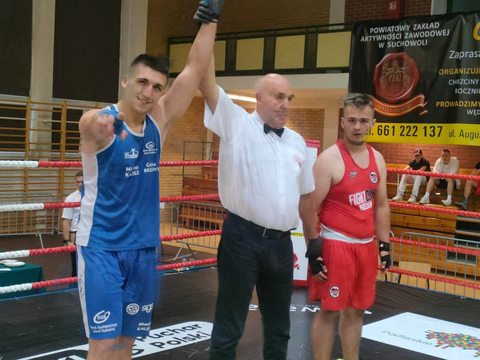

Wpisy 2023
Spotkanie sprawozdawcze na koniec roku 2023


Zakończenie roku to czas na podsumowanie oraz planowanie i określanie celów na nadchodzący nowy rok. Dnia 29. 12. 2023 r. odbyło się spotkanie Zarządu klubu wraz z jego członkami i sympatykami, podczas którego wspólnie mogliśmy wspominać sukcesy oraz porażki naszych podopiecznych. Każdy z członków podzielił się swoimi spostrzeżeniami, które w 2024 r. będą wskazówkami dla Zarządu klubu w jeszcze sprawniejszym działaniu na rzecz klubu KS Ziętek Team i jego zawodników
Mistrzostwa Polski w boksie olimpijskim w Toruniu
Sebastian Kusz na Mistrzostwach Polski w boksie w Toruniu powtórzył sukces z roku 2022r. Droga do brązowego medalu jednakże była dużo trudniejsza. Sebastian, żeby stanąć na 3 stopniu podium musiał pokonać trzech rywali. Największa niespodzianką dla wielu kibiców boksu było pokonanie przez Sebastiana Kusza zawodnika z grupy zawodowej. Knockout Promotions z dodatnim bilansem 10 do 0 Czerklewiczem
Dopiero na drodze o finał Mistrzostw Polski stanął mu zawodnik z Gdańska Rafał Perczynski który w rezultacie został Mistrzem Polski pokonując w finale Klemensa Szczepaniaka. Drugi nasz reprezentant klubu Aleksander Stawirej + 92 kg pierwszą walkę wygrał w pierwszym starciu.W ćwierćfinale Mistrzostw uległ nieznacznie na punkty Oskarowi Safaryan
Sebastian Kusz z KS Ziętek Team Kalisz zdobył brązowy medal w trakcie odbywających się w Toruniu 94. Indywidualnych Mistrzostw Polski Seniorów w Boksie.
Do strefy medalowej nie przedarł się Aleksander Stawirej.
W toruńskich mistrzostwach Sebastiana Kusz rywalizował w licznie obsadzonej kategorii wagowej do 80 kg. Musiał stoczyć dwie walki, aby awansować do ćwierćfinału.
W pierwszej z nich pokonał 5:0 Wiktora Skibę (Ring Busko-Zdrój). W kolejnym pojedynku zmierzył się ze znanym z ringów zawodowych Janem Czerklewiczem (Warszawa – zawodnik niezrzeszony).
Po twardym boju bokser KS Ziętek Team Kalisz wygrał 3:2, a sędziowie byli bardzo rozbieżni w swoich decyzjach – dwóch punktowało 30:27 na korzyść Kusza, a dwóch 30:27 na korzyść rywala.
Najbliższy prawdy o tym pojedynku był arbiter, który dał wygraną Sebastianowi 29:28.
Tak trudnej przeprawy zawodnik pochodzących z Sobiesęk w powiecie kaliskim nie miał w walce ćwierćfinałowej.
Pokonał w niej 5:0 (30:27, 30:27, 30:27, 29:28, 29:28) Bartłomieja Włodarczyka (UKS Shark Łódź). Półfinałowym przeciwnikiem Sebastiana Kusza był Rafał Perczyński (KS Sako Gdańsk).
Tym razem oponent okazał się zbyt wymagający dla zawodnika KS Ziętek Team Kalisz. Wszyscy sędziowie byli zgodni i punktowali 30:27 na korzyść Perczyńskiego.
Tym samym podopieczny Trenera Mariusza Ziętka zdobył brązowy medal mistrzostw kraju seniorów, co jest kolejnym jego sukcesem na krajowych ringach.
Do strefy medalowej nie udało się przedrzeć Aleksandrowi Stawirejowi rywalizującemu w najcięższej kategorii wagowej +92 kg.
Bokser mający już na koncie medale mistrzostw Polski seniorów dobrze rozpoczął turniej w Toruniu, bowiem w pierwszej swojej walce już w I rundzie przez RSC pokonał Konrada Tkacza (SZKB Boks Zabrze).
W ćwierćfinale Olek stanął naprzeciw swojego odwiecznego rywala – Oskara Safaryana (Bagdasarian Boxing Club Poznań). Jego przeciwnik pewnie wygrał ich kolejną konfrontację 5:0.
Czterech sędziów punktował 30:27 dla Safaryana, a jeden 29:18. Bokser z Poznania ze względu na kontuzję nie przystąpił jednak do walki półfinałowej i musiał zadowolić się brązowym medalem.
Fot. KS Ziętek Team Kalisz - FB
Autor: Portal zyciekalisza.pl
Puchar Polski Juniorów i Kadetów w Ciechocinku 21-26. 11.2023
W minionym tygodniu nasi zawodnicy reprezentowali nasz klub na Pucharze Polski Juniorów i Kadetów które odbyły się w Ciechocinku 21-26. 11.2023 r
Martyna Kuświk 60 kg junior
Nikola Grabowska 75 kg junior
Maciek Broś 48 kg junior
Adam Malota 71 kg junior
Maksymilian Kuświk 57 kg kadet
Z bardzo dobrej strony pokazały się dziewczyny, które ambitnie rywalizowały w swoich kategoriach wagowych, zdobywając medale.
Martyna Kuświk 60 kg brązowy medal i Nikola Grabowska 75 kg brązowy medal. Cieszymy się ze zdobytych medali oraz życzymy zawodnikom dalszych sukcesów.
XII Młodzieżowe Mistrzostwa Polski Kobiet w Boksie oraz XXXI Młodzieżowych Mistrzostwach Polski Mężczyzn w Boksie w Pułtusku

Reprezentaci klubu Ziętek Team Patryk Karolewski, Sebastian Kusz oraz Maja Śnieg brali udział w XII Młodzieżowych Mistrzostwach Polski Kobiet w Boksie oraz XXXI Młodzieżowych Mistrzostwach Polski Mężczyzn w Boksie w Pułtusku, które odbywają się 16-21.10.2023
VII Międzynarodowy Turniej Imperium Boxing w Wałbrzychu
W dniach 7-8 października 2023r. odbył się VII Międzynarodowy Turniej IMPERIUM BOXING w Wałbrzychu
Nasz zawodnik, Sebastian Kusz (80 kg), uczestniczył w zawodach, gdzie odnotował dwie zwycięskie walki. Pierwsza z Jakubem Kasprzakiem, druga z Aleksandrem Soją, co przyniosło mu zasłużony tytuł najlepszego zawodnika. Gratulujemy Sebastianowi i życzymy dalszych sukcesów na ringu
Młodzieżowe Mistrzostw Polski w Kickboxingu
W minioną sobotę 1 października 2023 R. na Małej Plaży w Szałe odbyły się niezwykłe Młodzieżowe Mistrzostwa Polski w Kickboxingu, zorganizowane przez utytułowany ZiętekTeam.pl
W sumie odbyło się blisko 30 emocjonujących walk, a największe wrażenie zrobił na nas Olaf Pera , który w finałowej walce posłał rywala na deski, zdobywając tym samym młodzieżowe mistrzostwo Polski
Niemniejsze emocje towarzyszyły walce Mai Śnieg, która wygrała na punkty. Trzeci medal powędrował do Olgi Pachciarek
Dzięki wydarzeniom takim jak te, młodzi sportowcy mają okazję nie tylko do rywalizacji, ale także do pokazania swoich umiejętności szerszej publiczności. To niezwykłe doświadczenie, które z pewnością zostanie z nimi na długo
Organizatorem tego niezapomnianego turnieju był Ziętek Team, Polski Związek Kickboxingu oraz Mała Plaża Szałe
Wspaniałe Wieści z Mistrzostw Polski Młodziczek i Młodzików 2023
Pierwszego dnia po powrocie z Mistrzostw Polski Młodzików i Młodziczek, nasi zawodnicy wrócili na trening, gdzie czekały ich serdeczne gratulacje od kolegów i koleżanek z klubu. Atmosfera była niesamowita, pełna wzajemnego wsparcia i dumy z sukcesów zawodników! Gratulacje dla Joanny, Mateusza, Maksymiliana, Jędrzeja oraz Mikołaja
Szczególne słowa uznania kierujemy w stronę Zuzanny Betki za zdobycie pierwszego miejsca. Jej poświęcenie i determinacja stanowią inspirację dla nas wszystkich
Mistrzostwa Polski Młodziczek i Młodzików 2023 w boksie olimpijskim
W dniach 02-08.10.2023 r. mieliśmy okazję śledzić niezwykłe zmagania naszych zawodników na ringu w Śremie. W zawodach brali udział
- Maksymilian Kuświk -54 kg
- Jędrzej Becker -70 kg
- Joanna Skowrońska -51 kg
- Zuzanna Betka -38 kg
- Mikołaj Druciarek -90 kg
- Mateusz Pisarski -52 kg
Ogromne gratulacje dla Zuzanny Betki (-38 kg), która stanęła na najwyższym podium, zostając Mistrzynią Polski w boksie olimpijskim
Wasze poświęcenie i determinacja są inspiracją dla nas wszystkich. Dziękujemy, że z dumą reprezentujecie nasz klub
Olaf Pera złotym medalistą Mistrzostw Europy na Mistrzostwach Europy WAKO Dzieci, Kadetów i Juniorów w Stambule, Turcja
26.08 - 3.09 Stambuł, Turcja
Ogromne gratulacje dla Olafa Pery
Chcielibyśmy serdecznie pogratulować Olafowi jego niesamowitego sukcesu na Mistrzostwach Europy w kickboxingu full-contact.
W finałowej walce pokonał swojego przeciwnika i teraz z dumą ogłaszamy go oficjalnym złotym medalistą Mistrzostw Europy. Podopieczny Mariusza Ziętka był bezkonkurencyjny w formule full contact w kategorii do 91 kg juniorów starszych.
W półfinale rozprawił się z Chorwatem Mateo Ravliciem. – Olaf pokonał swojego rywala na punkty prezentując się doskonale i mając nad nim wyraźną przewagę.
Przeciwnik był liczony w drugiej rundzie, co świadczy o ogromnej determinacji i umiejętnościach Olafa – relacjonuje trener Ziętek.
Pod dyktando zawodnika Ziętek Team, którego w kadrze trenuje Włodzimierz Trzeciak, toczyło się także finałowe starcie które Pera również wygrał jednogłośnie na punkty.
Tym razem pozostawił w pokonanym polu reprezentanta Turcji, Halila Yilmaza Yigita, sięgając w ten sposób po złoty medal.
Zgrupowanie
KS ZIĘTEK TEAM - ZĄB 2023
Zawodnicy z KS Ziętek Team przebywali na zgrupowaniu w malowniczym Zębie
Pierwszy dzień był poświęcony organizacji, a od następnych dnia rozpoczęliśmy treningi pełną parą
Drugiego dnia rano ruszyliśmy z treningiem wzmacniającym, skupiającym się na różnorodnych ćwiczeniach na stacjach
Po obiedzie przenieśliśmy się na boisko, gdzie intensywnie pracowaliśmy nad techniką
Czas na górską przygodę
W trzeci dzień naszego zgrupowania podzieliliśmy się na dwie grupy. Grupa starsza pobiegła w kierunku Kasprowego Wierchu
by wzmocnić swoją kondycję przed przyszłymi walkami. Młodsza grupa natomiast wybrała się nad urokliwy Czarny Staw
To dopiero początek, bo już we wtorek czeka nas jeszcze dłuższa podróż przez górskie szlaki

Nie zwalniamy tempa
Minął już tydzień intensywnego obozu
Dni pełne wyzwań, szlaki zdobywane i treningi, które zbliżają nas do doskonałej formy
Jesteśmy na dobrej drodze do osiągnięcia naszych celów
Piątego dnia wspólnie wyruszyliśmy na wycieczkę górską, zdobywając kolejne szczyty - Giewont a następnie Kasprowy Wierch. Odwiedziliśmy również COS OPO, by nie tylko trenować, ale także wzajemnie motywować się w drodze do perfekcyjnej formy przed nadchodzącymi zawodami. Każdy dzień to nowe wyzwanie, a my konsekwentnie pracujemy nad osiągnięciem szczytowej kondycji
XXVII Turnieju Bokserskim im. Tadeusza Grzelaka w Kaliszu
 

W Kaliszu 17.06.2023r. odbył się XXVII Turnieju Bokserskim im. Tadeusza Grzelaka w Kalisz
Naszym pierwszym zawodnikiem był Ksawery Durski, boksujący w kategorii adept w walce pokazowej do 40 kg. Stawił on czoła Franciszkowi Gołdynowi (Koło). Walka zakończyła się remisem. Ksawery, gratulujemy Ci odwagi i determinacji
Krystian Szczepaniak, reprezentujący nasz klub w kategorii seniorów (63 kg), stanął do walki z Aleksandrem Kleinem (KS Prosna Kalisz/Ostrów Wlkp). Po zaciętym starciu, obaj zawodnicy pokazali swoje umiejętności i determinację. Krystian pokazał imponujące umiejętności na ringu, jednak walka również zakończyła się remisem. Krystian, jesteśmy dumni z Twojego zaangażowania i wysiłku, które pokazałeś w walce
Dziękujemy wszystkim, którzy przybyli na turniej, aby wspierać naszych zawodników. Brawo dla Krystiana i Ksawerego za wspaniałe walk
XXII Mistrzostw Polski Juniorek i Juniorów w boksie
 



Mamy świetne wieści z XXII Mistrzostw Polski Juniorek i Juniorów w boksie, które odbyły się w Sokółce w dniach 12-16 czerwca
Nasi zawodnicy dali z siebie wszystko na rinu
Krzysztof Winkler (80 kg), który dopiero rozpoczyna swoją karierę bokserską, stanął do walki z doświadczonym i utytułowanym kadrowiczem Maksymilianem Kuziemskim. Pomimo zaciętej walki, Krzysztof przegrał po 3 rundach na punkty. Jesteśmy dumni z Twojego zaangażowania i odwagi, jaką pokazałeś w ringu, Krzysztof
Nasza zawodniczka Nikola Grabowska (do 81 kg) zaskoczyła wszystkich swoim talentem i determinacją. Mimo małej ilości walk na swoim koncie, Nikola wygrała półfinałową walkę, dowodząc, że ma ogromny potencjał jako bokserka. Niestety, nie udało jej się sięgnąć po zwycięstwo w finale. Nikola oficjalnie zdobyła tytuł Wicemistrzyni Polski Juniorek w boksie olimpijskim w kategorii do 81 kg. Jesteśmy ogromnie dumni z Twoich osiągnięć, Nikola
A teraz przyszedł czas na ogromną radość! Nasz niezwykle utalentowany zawodnik Olaf Pera (do 92 kg) walczył dzielnie, przewalczając cztery walki (pierwsza walka w drugiej rundzie przez rsc, druga walka przez poddanie przeciwnika, trzecia walka przez dyskwalifikacje przeciwnika, czwarta walka przez poddanie przeciwnika). Z radością informujemy, że Olaf oficjalnie został Mistrzem Polski Juniorów w boksie olimpijskim! Jego ciężka praca i determinacja przyniosły zasłużone owoce, Olaf! Jesteśmy dumni z Ciebie
Gratulacje, Olafie, Nikola i Krzysztofie! Jesteście naszą duma i inspiracją dla wszystkich! Pokazaliście prawdziwy duch walki i talent bokserski
YouTubeMistrzostwa Polski w kickboxingu light-contact kadetów młodszych i starszych - Bałtów 2023
Cieszymy się, że możemy podzielić się z Wami wspaniałymi wiadomościami z Mistrzostw Polski w kickboxingu light-contact dla kadetów młodszych i starszych które odbyły się w Bałtowie w dniach 2-4 czerwca.
Nasz klub był reprezentowana przez trzech utalentowanych zawodników. Jesteśmy dumni, że mogliśmy ich tam widzieć.
Gratulacje dla Zuzanny Betki za zdobycie złotego medalu w kategorii kadetów starszych do 37 kg.
W zawodach wzięli również udział Maciej Broś (kadet starszy) w kategorii do 47 kg oraz Maksymilian Kuświk (kadet starszy) w kategorii do 57 kg.
Mimo że nie zdobyli miejsca na podium, doceniamy ich wysiłek, odwagę i zaangażowanie w trakcie zawodów.
Jesteśmy pewni, że to tylko kwestia czasu, zanim odniosą kolejne sukcesy.
Dziękujemy naszym zawodnikom za reprezentowanie KS Ziętek Team i za ich ciężką pracę w trakcie przygotowań do tych zawodów. Jesteście niesamowici.
Mistrzostwa Polski w Kickboxingu w formule light-contact i pointfighting w Będzinie
W weekend (21-23.04) odbyły się Mistrzostwa Polski w Kickboxingu w formule light-contact i pointfighting w Będzinie. Nasz klub reprezentowało kilku zawodników, którzy stanęli do walki z najlepszymi w kraju
Jesteśmy dumni, że Marek Mazur, zawodnik z naszego klubu, zajął pierwsze miejsce na podium w obu formułach w kategorii do 74 kg (weteran). To ogromny sukces i potwierdzenie jego umiejętności oraz ciężkiej pracy, którą włożył w treningi
Nasi pozostali zawodnicy również zaprezentowali wysoki poziom walcząc z silnymi rywalami. Maja Śnieg -55kg senior
Krzysztof Winkler - 79kg (junior), Adam Małota -69kg (junior), Paweł Plutecki -57 kg (junior) walczyli dzielnie, jednak niestety nie stanęli na podium
Chcielibyśmy pogratulować wszystkim naszym zawodnikom za odwagę i poświęcenie, jakie wkładają w swoją pasję. Jesteśmy przekonani, że ich ciężka praca wkrótce przyniesie więcej sukcesów. Wielkie brawa dla naszych wojowników!
Mistrzostwa Polski Juniorów i Seniorów w Stębarku w formule full contact
W dniach 31.03-02.04 w Stębarku miały miejsce Mistrzostwa Polski Juniorów i Seniorów w formule full contact. W imprezie wzięło udział wielu utalentowanych zawodników, którzy reprezentowali nasz klub, zdobywając łącznie sześć medali
Wśród nich był Maciej Broś (junior młodszy), który w kategorii wagowej do 48 kg zdobył złoty medal. Paweł Plutecki (junior młodszy), pomimo przegranej w półfinale zdołał zdobyć brązowy medal w kategorii wagowej do 60 kg. Wśród juniorek młodszych na trzecim miejscu znalazły się Marina Ziętek i Martyna Kuświk, która po zaciętej walce zdobyła brąz w swojej kategorii wagowej. W kategorii senior również mieliśmy znakomitych zawodników. Krystian Szczepaniak (63,5 kg) w kategorii senior sięgnął po brąz
Gratulujemy naszym zawodnikom i życzymy dalszych sukcesów na ringu
Suzuki Boxing Night #20

Sebastian Kusz zakończył obóz sparingowy z zawodnikami z Litwy, który pozwolił mu na przygotowanie się do nadchodzącej walki
W piątek, 17 marca o godzinie 20:00, zawodnik wagi 80 kg stanął do ringu na 20. odsłonie gali Suzuki Boxing Night, gdzie Polska zmierzy się z Czechami
Sebastian zmierzył się z Tomáš'em Bureš'em, a cała walka była transmitowana na antenie TVP Sport
To był wspaniałe sportowe wydarzenie, w którym moglismy zobaczyć jak Polska radzi sobie w walce z Czechami
a Sebastian Kusz walczył o kolejne zwycięstwo. Jeśli chcesz obejrzeć walkę Sebastiana, nie przegap transmisji TVP Sport
YouTube Boks, Gala Suzuki Boxing Night #20 [ZAPIS]Mistrzostwa Wielkopolski w "boksie olimpijskim" w Pile
W dniach 10-12.03.2023r. odbyły się Mistrzostwa Wielkopolski w "boksie olimpijskim" w Pile, w których nasi zawodnicy świetnie się zaprezentowali. Cieszymy się, że możemy podzielić się z Wami wynikami naszych zawodników
Maksymilian Kuświk w kategorii "mlodzik" do 52 kg stoczył dwie wspaniałe walki, w których pokonał swoich rywali na punkty. Jego determinacja i odwaga przyniosły mu zasłużony złoty medal oraz tytuł Mistrza Wielkopolski w boksie
Olga Pachciarek zawalczyła w kategorii " senior" do 52 kg zdobywając srebrny medal. Olga wygrała pierwszą walkę jednogłośnie na punkty, jednak w finale zmierzyła się z doświadczoną rywalką. Po zaciętej walce niestety przegrała, ale mimo to cieszymy się z jej świetnego występu i zdobycia srebrnego medalu
W kategorii "kadet" do 57 kg srebrny medal zdobyła Martyna Kuświk. Mimo porażki w półfinale z doświadczoną rywalką, Martyna świetnie zawalczyła i zasłużyła na wyróżnienie.
Chcielibyśmy także wyróżnić Aleksa Durskiego i Ksawerego Durskiego w kategorii "mlodzik" 37-40 kg, którzy wywalczyli brązowe medale. Również Maciej Broś w kategorii "kadet " 44-46kg zdobył brązowy medal, co jest dla niego dużym osiągnięciem
Gratulujemy naszym zawodnikom i życzymy dalszych sukcesów na ringu